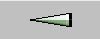
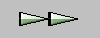
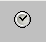
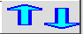

| Diana User Guide: Time control and animation | Previous: Edit tools | Next: Status line | Index |
Set desired time with the time slider. This always contains the available times, depending on what has been selected in the menus. Primarily the field times are displayed. If no fields are selected satellite times are shown or if no satellite is selected, observation times are used.
The spinbox contains the interval with which the time slider changes (Ctrl + arrow up/down can be used to increase/decrease the number).
When something new is selected in the dialogues, the time can be set
without anything being plotted until "Apply" is selected. If the time
is altered later, the plot will happen immediately.
The time can also be changed with the animation buttons.
 Animate backwards (or Ctrl+shift+arrow left)
Animate backwards (or Ctrl+shift+arrow left)

One step backwards (or Ctrl+arrow left)
 One step forwards (or Ctrl+arrow right)
One step forwards (or Ctrl+arrow right)

Animation forwards (or Ctrl+shift+arrow right)
 Stop animation (or Ctrl+shift+arrow down)
Stop animation (or Ctrl+shift+arrow down)
 Loop the animation (Ctrl+shift+arrow up)
Loop the animation (Ctrl+shift+arrow up)

Limit the time interval for animation and
select wich data type (field, satellite, observations, etc) to use for the
time slider (default is field). Looking at several data types,
only the available times from the data type selected here
will be available.
(New dialogue is shown).
See the "File" bulletin-point, under "Menu bar" in the index.
|  |
The level of fields can be changed up and down. This applies to the first
field selected with variable levels and other fields with the same levels
selected in the field dialogue. This
also applies to EPS-clusters. Simultaneously the level for observations is changed (plot type Pressure) if level Like field is selected in observation dialogue. |
| Diana User Guide: Time control and animation | Previous: Edit tools | Next: Status line | Index |